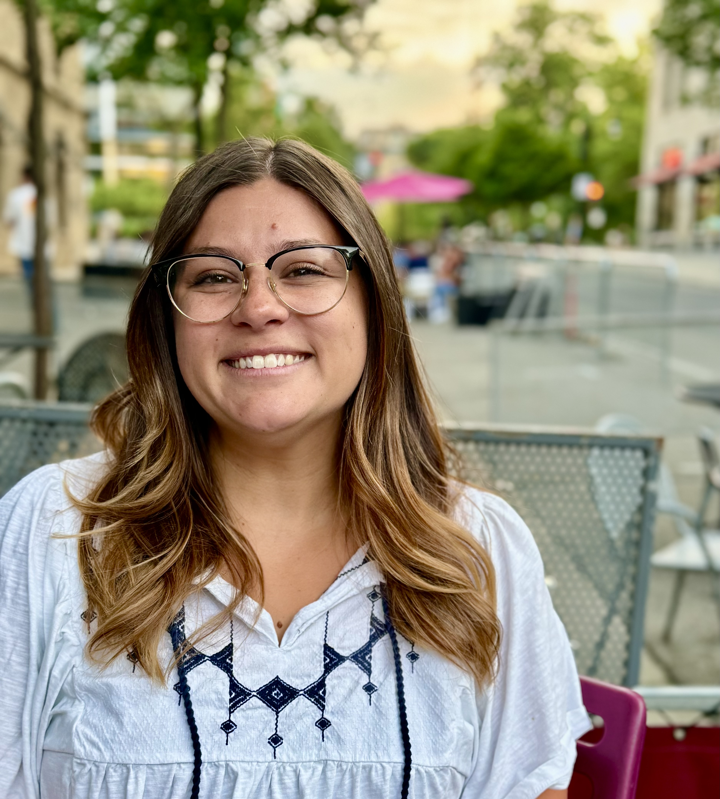

Department of English, Literary Studies
I am a doctoral dissertator at the University of Wisconsin-Madison working at the intersection of Latinx cultural studies, affect theory, and American literary history. My research examines how Latinx identity is felt, represented, and politically mobilized among second- and later-generation Latines in the twenty-first-century United States, drawing on novels, superhero comics, film, television, and YA fiction to trace the affective contours of a generation shaped entirely within and by American culture.

PhotoThis dissertation examines Latinx and American culture of the twenty-first century to understand how Latinidad as a structure of feeling has transformed since the turn of the century. Bringing textual analysis into dialogue with robust qualitative research, the project reads novels, superhero comics, film, and television alongside their readers and audiences to understand how meaning is made in relation to contemporary creative work about and by Latines in the United States.
Read more about the project →Latinx/Chicanx literary and cultural studies · affect theory · second-generation identity · superhero comics · contemporary American fiction · cultural representation · media and belonging
Explore research →Courses in African Feminisms, Planetary Humanities, Social Media Writing, and Comparative U.S. and American Indian Studies at UW-Madison and UNC Charlotte.
View courses →Presenting at MELUS 2025, the conference of the Society for the Study of the Multi-Ethnic Literature of the United States, Austin, TX, April 29–May 3, 2025.
All talks →Regular contributor to the Marvel Cinematic University podcast and Project Assistant with Holding History, a public humanities program at UW-Madison.
Public work →
Department of English
University of Wisconsin-Madison
Dr. Ramzi Fawaz (Chair) · Dr. Sarah Ann Wells · Dr. ingrid diran
English (Native) · Spanish (Full Professional)